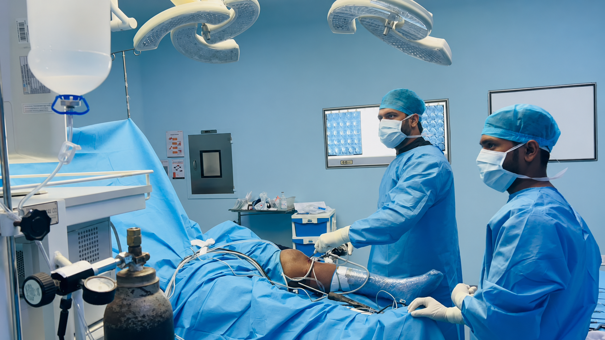

A considered plan begins with listening and is shaped around the patient’s symptoms, examination and goals.
Understanding the concern
Knee arthritis can cause pain, stiffness and swelling that interfere with walking, stairs or sleep. The consultation begins with the pattern of symptoms, previous treatment, medical history and the activities the person wants to return to.
Assessment and imaging
A physical examination assesses movement, alignment and stability. X-rays may help show changes in the joint; the doctor considers these findings alongside symptoms and general health.
Choosing the right treatment
Many people first discuss non-surgical measures such as tailored exercise, physiotherapy, weight management and appropriate medicines. When symptoms remain severe despite treatment, knee replacement may be considered. The discussion includes expected benefits, risks and whether robotic-assisted planning is suitable.
Surgery and rehabilitation
Before surgery, the care team explains preparation, anaesthesia and the recovery plan. Following joint replacement, guided movement and physiotherapy help build strength and confidence. Follow-up checks the wound, progress and any concerns. Recovery differs for each individual.

FOR YOUR CONSULTATION
Questions to ask
What are my non-surgical options? How would a replacement help my specific condition? What support will I need at home?
Further reading: American Academy of Orthopaedic Surgeons ↗